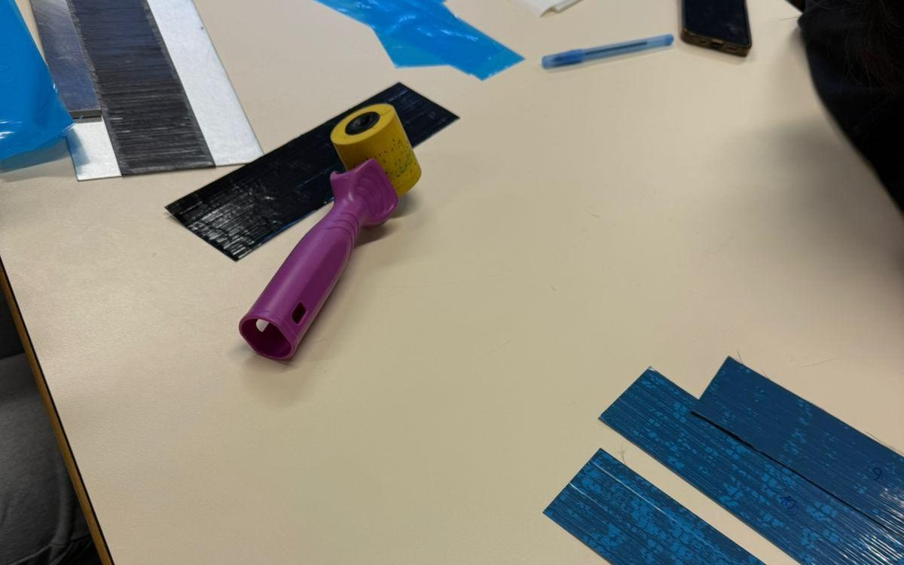
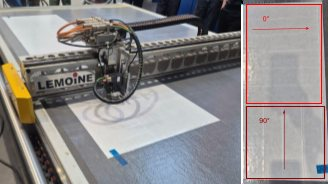
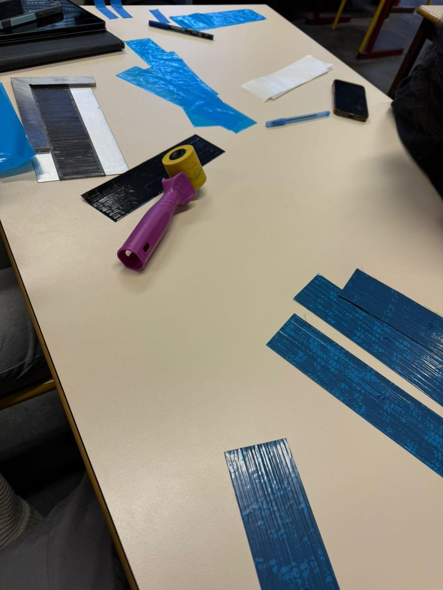
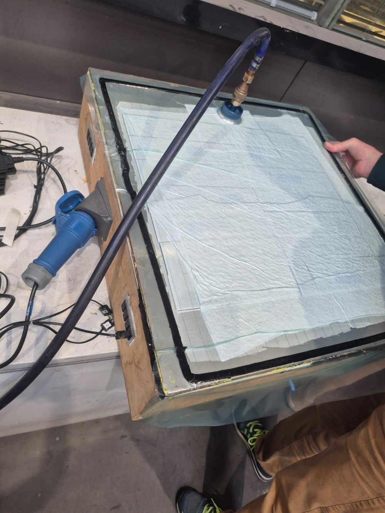
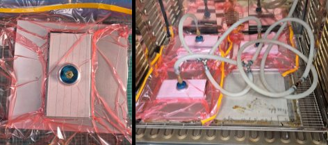
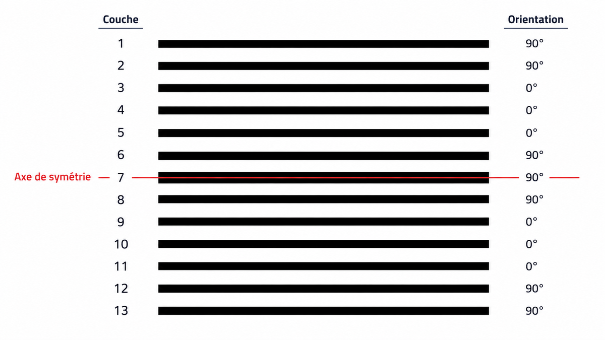
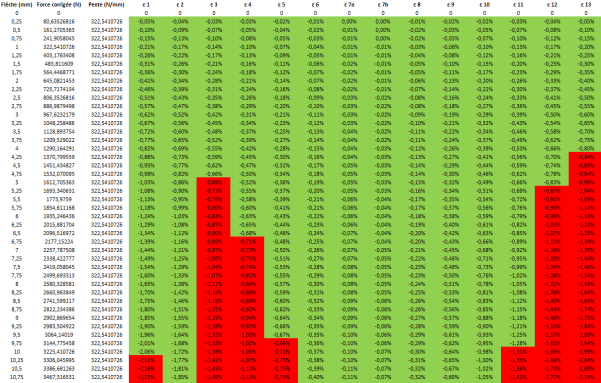

Carbon/Epoxy Laminate - From Prediction to Failure
A 13-ply carbon/epoxy laminate designed on paper, laid up by hand, cured under vacuum and broken in three-point bending. Every measurement was checked against the theoretical model: mass, thickness, fibre content, stiffness and the order in which the plies fail.

What the project showed
The five figures that matter most, taken from the report. Click any image to enlarge.

The model held until the first ply broke
The green line is the force-deflection curve predicted from the ply-by-ply bending stiffness. Once the initial seating of the specimen is taken up, both measured curves follow it closely up to about 5 mm.
Then the load drops in steps instead of falling to zero: each step is a ply cracking or delaminating, and the remaining plies take back part of the load. A steel specimen, tested as a reference, reaches a similar load but yields progressively instead.
Three-point bending: measured specimens, theoretical curve and steel reference

Checking the inside without cutting it
After curing, both plates were scanned by ultrasound to look for porosity or delamination. The two half-plates came out sound: only small local indications, consistent with a hand lay-up, and no major defect likely to change the mechanical behaviour.
Ultrasonic C-scan of the two cured plates (left and right halves)

Thickness mapped across the whole plate
Thickness was measured point by point to build a map of the plate. The average of 3.85 mm is slightly below the 3.95 mm calculated before curing, which matches the resin loss and compaction expected under vacuum.
Fibre volume fraction was then recalculated two ways - from the matrix mass fraction (54.8 %) and from the measured thickness (55.8 %) - and the two results agree.
Thickness map of the [90₂/0₃/90₂]T plate


Why fibre orientation decides everything
A 0° ply has a modulus of about 180-208 GPa along the fibres; a 90° ply only 7-8 GPa. Where the stiff plies sit relative to the neutral axis therefore controls the bending stiffness, which was calculated ply by ply.
These hand-drawn diagrams compare the two layups: in [0₆/90]T the stiff skins carry the load, while in [90₂/0₃/90₂]T the stress jumps outward as soon as it reaches the inner 0° plies.
Stress and shear distribution - [0₆/90]T · Stress and shear distribution - [90₂/0₃/90₂]T

Reading the fracture
The broken specimens show a clean separation between plies, with 90° fibres still stuck to the neighbouring 0° ply. Failure was not only bending of the outer plies: interlaminar shear at the core of the laminate made the plies slide and come apart.
The conclusion of the study: the strength of a laminate depends as much on its stacking sequence and on the quality of manufacturing as on the fibres themselves.
Specimens after the bending test
Predict, make, measure, compare
Predict
From the supplier datasheet (UD 300 g/m², 36 % resin by mass), calculated matrix density, fibre volume fraction, ply and laminate thickness, density and expected mass.
Make
Laser-cut the prepreg plies at 0° and 90°, laid up two 13-ply stacking sequences, debulked under vacuum at 30 °C and cured in an oven between mould plates.
Measure
Weighed and measured the cured plates, mapped their thickness and inspected them by ultrasound.
Compare
Built a spreadsheet model of the bending test (equivalent stiffness, strain in each ply, failure order) and compared it with the real test.
Context: two-person team project in the composites module at Arts et Métiers Lille. Report written in French.
Manufacturing, step by step
Photos and figures from the original report. Click to enlarge.











